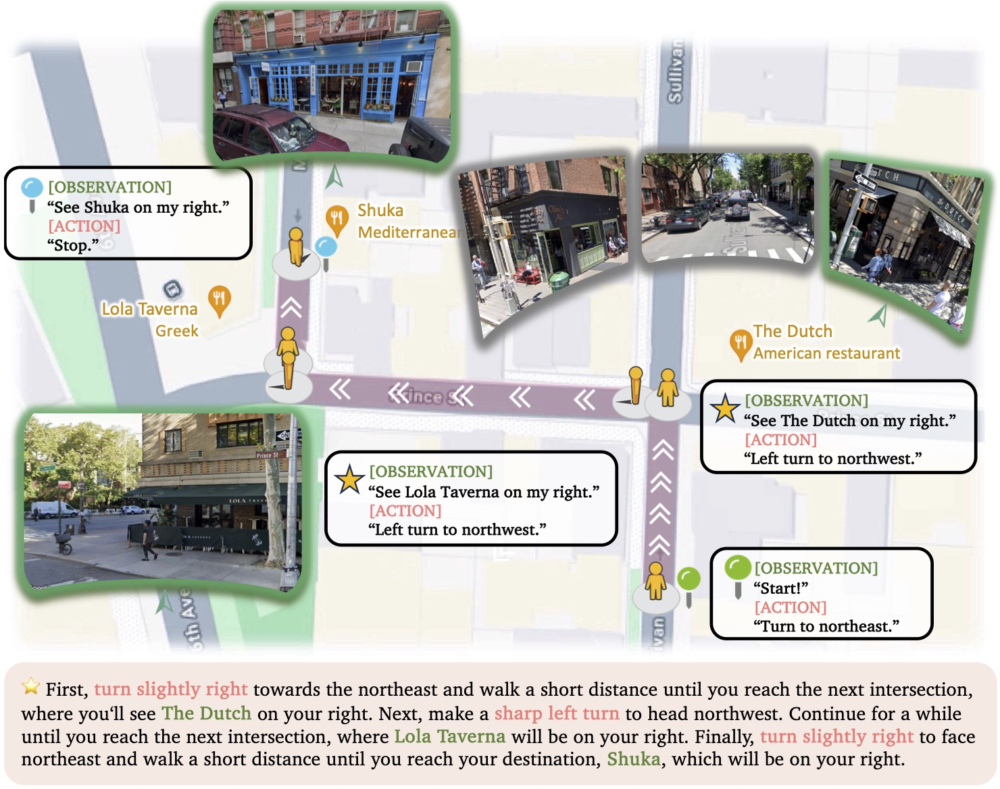
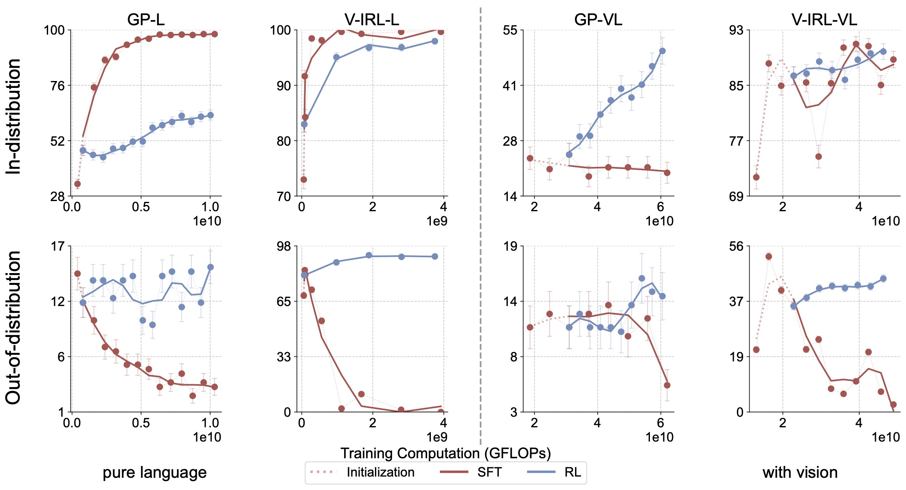
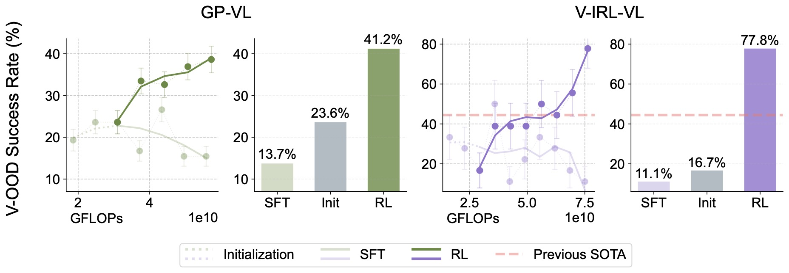
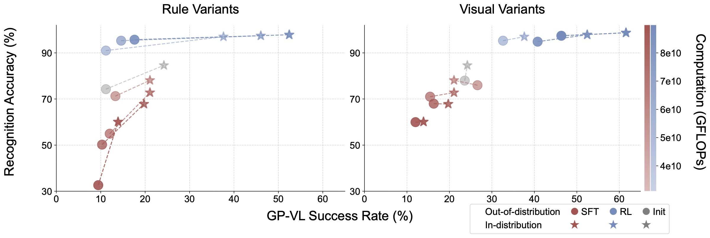
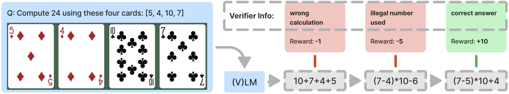
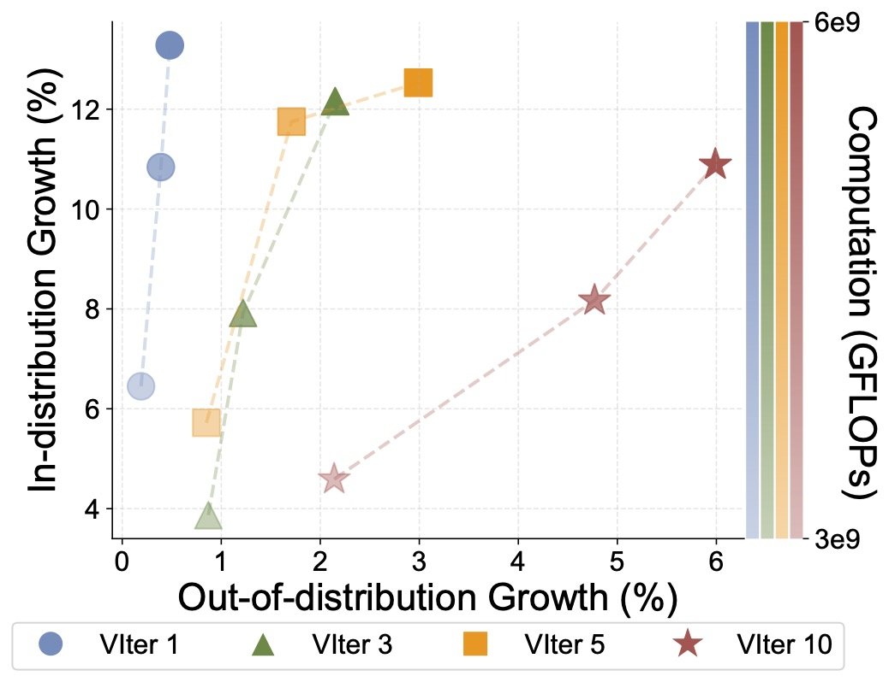

Supervised fine-tuning (SFT) and reinforcement
learning (RL) are widely used post-training techniques for foundation models. However, their
roles in enhancing model generalization capabilities remain unclear. This paper studies the different effects of SFT and RL on generalization
and memorization.
We introduce
2 evaluation tasks to assess how models trained with
SFT and RL generalize to unseen variants in both
textual and visual domains. We show that RL,
especially when trained with an outcome-based
reward, generalizes across both textual rule variations and visual variations. SFT, in contrast,
tends to memorize training data and struggles to
generalize to unseen rules or out-of-distribution
scenarios. Further analysis reveals that RL improves the model's underlying visual recognition capabilities,
contributing to its enhanced generalization. We additionally provde a detailed study on the role of verification in RL training.
Figure 1: A comparative study of RL and SFT on the visual navigation environment V-IRL for OOD generalization. OOD curves represent performance on the same task, using a different textual action space.
Evaluation Tasks
We leverage two evaluation tasks to study the generalization capabilities of foundation models. Each task
spans two modalities: pure language (-L) and vision-language (-VL), where the latter requires the model to process visual input before solving the task.
Both tasks contain rule variants and visual variants to evaluate out-of-distribution generalization.
GeneralPoints. We introduce this task to assess the arithmetic generalization capabilities of foundation models.
The goal is to create an equation that equals a target number (24 by default) using all 4 numbers from the cards exactly once.
Figure 2: Different variants of GeneralPoints. Rule variants are
achieved by switching the interpretation of 'J', 'Q', and 'K'. Visual variants are achieved by changing the color of the cards.
V-IRL. We adopt this task to study the spatial reasoning capabilities in an open-world navigation domain. The goal is to navigate to a target location by
following a set of instructions that contain spatial information.

Figure 3: Demonstration of one navigation task in V-IRL. Agent navigates from place to place following the given linguistic
navigation instructions in V-IRL. See original V-IRL for more design details.
Figure 4: Different variants of V-IRL. Rule variants are
achieved by switching the action space while visual variants are achieved by changing the city.
For each task, we separately scale the training compute for RL and SFT on a single rule and test out-of-distribution generalization on unseen rules.
We observe that RL demonstrates generalization across all settings. In contrast, SFT tends to overfit the training data.

Figure 5: Success rate (%) - GFLOPs trendlines for RL and SFT on GeneralPoints and V-IRL.
Generalization in Visual Out-of-Distribution Tasks
Since VLMs also incorporate a visual modality,
we next study the effects of visual variation in OOD generalization. We conduct our experiments based on visual variants: for GeneralPoints, we train the VLM using the black suits (♠, ♣)
and test out-of-distribution performance on the red suits (♥, ♦). For V-IRL, we train the model on routes collected in New York City and evaluate it on routes from various cities worldwide. We see that RL still significantly outperforms SFT.

Figure 6: Comparison of out-of-distribution performance under visual variants. We present both the performance dynamics (shown as lines) and final performance (shown as bars) for visual out-of-distribution evaluations. As a byproduct, we achieve state-of-the-art on V-IRL VLN mini benchmark.
RL Improves Visual Capabilities
To further study RL's effect on visual capabilities , we conduct additional ablation studies in the GP-VL environment to investigate the OOD performance of RL and SFT,
along with the model's visual recognition accuracy, in terms of recognizing the 4 cards from the input image.
We find that as scaling up post-training compute, RL improves both recognition and overall accuracy, while SFT shows opposite effect.

Figure 7: Recognition vs. success rate for RL and SFT under different variants in GP-VL.
We report both in-distribution (red) and OOD
(blue)
performance of recognition (y-axis) and episode success rate (x-axis). We denote the training compute of each data point via transparency (color bar) while connected (★-○) pairs are evaluated using same checkpoints.
Verification Amplifies Generalization
We apply squential verification-revision to reward the model during RL training. We observe that verification amplifies the generalization capabilities of RL, where
OOD performance grows faster as we increase the number of verification iterations.

Figure 8: Example of applying sequential verification-revision on GeneralPoints.

Figure 9: In-distribution vs. OOD performance growth
on GP-L. We record RL experiments with different number of verification iterations (VIter) as scaling up training
compute (color transparency).
Conclusion
To conclude, we present a comparative study and observe that SFT memorizes, RL generalizes in multiple modalities and task domains .
We also want to note that SFT is still important as warmup of RL training, especially in scenarios that highly require instruction following capabilities.
We hope our study can enhance the understanding of post-training techniques and fuel future research in this area.
Acknowledgement
We sincerely thank NYU VisionX for the nice project page template.
BibTeX
@misc{chu2025sftmemorizesrlgeneralizes,
title={SFT Memorizes, RL Generalizes: A Comparative Study of Foundation Model Post-training},
author={Tianzhe Chu and Yuexiang Zhai and Jihan Yang and Shengbang Tong and Saining Xie and Dale Schuurmans and Quoc V. Le and Sergey Levine and Yi Ma},
year={2025},
eprint={2501.17161},
archivePrefix={arXiv},
primaryClass={cs.AI},
url={https://arxiv.org/abs/2501.17161},
}